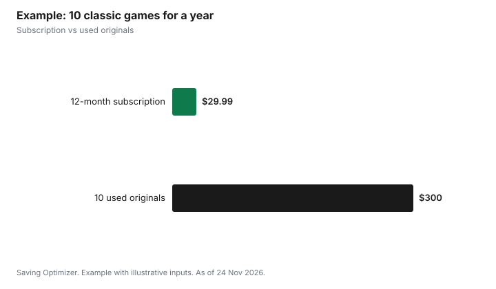

Entertainment · Canada
Retro Gaming on a Budget: A Canadian Cost Guide

Original retro games can cost collector prices, but you can play many classics cheaply through subscriptions and official re-releases. Nintendo Switch Online, which includes NES, Super NES and Game Boy libraries, cost $5.99 every 30 days on Nintendo's Canadian eShop, and 12-month codes were $29.99 at Amazon.ca when checked on 24 Nov 2026. Buy original cartridges only for the few games you really want, test them, and watch for reproductions.
Key takeaways
- Nintendo Switch Online: $5.99 every 30 days, or $29.99 for a 12-month code at Amazon.ca (checked 24 Nov 2026). It includes NES, Super NES and Game Boy libraries.
- Official collections and re-releases on current consoles are often cheaper than originals.
- Used cartridges: buy from shops that test them or from sellers who let you test in person.
- Watch for reproduction carts sold as originals. Check labels, boards and prices that seem too low.
- Example: a year of Nintendo Switch Online costs $29.99, against $300 or more for a handful of original games.
Cheapest ways to play
| Option | Cost | Notes |
|---|---|---|
| Nintendo Switch Online, individual | $5.99 per 30 days | Nintendo eShop Canada |
| Nintendo Switch Online, 12 months | $29.99 | Digital code at Amazon.ca |
| Official collections | Price per game | Check sales |
| Original cartridges | Varies widely | Test before buying |
Used cartridges
- Local game shops often test games and give a short guarantee.
- Marketplace and Kijiji: meet in public, test on the seller's system if you can.
- Check label, shell screws and the board. Reproductions often have different boards or labels.
- Compare prices with recent sold listings before paying.
- Cartridge batteries in some older games fail; save files may not hold.
Fakes and unofficial devices
Unofficial preloaded "retro" consoles may include pirated games, poor emulation and low build quality. Stick to official products or originals you own. For digital vs physical trade-offs, see our digital vs physical games guide.
Plan: an example
You want to play 10 classic games over a year. Option 1: a 12-month Nintendo Switch Online code at $29.99, if the games are in its library. Option 2: buy 10 used originals at an example $30 each.

Subscription: $29.99 for the year. Originals: 10 × $30 = $300, plus a working original console if you don't have one. The subscription is far cheaper for playing; originals make sense only for collectors or games not offered elsewhere. More cheap hobby ideas are in our cheap hobbies guide.
Sources
- Nintendo eShop Canada, Nintendo Switch Online individual membership ($5.99 every 30 days), checked 24 Nov 2026.
- Amazon.ca, Nintendo Switch Online 12-month individual membership code ($29.99), checked 24 Nov 2026.
Frequently asked questions
How much is Nintendo Switch Online in Canada?
The individual membership was $5.99 every 30 days on Nintendo's Canadian eShop, and 12-month codes were $29.99 at Amazon.ca when checked on 24 Nov 2026.
What retro games come with Nintendo Switch Online?
It includes NES, Super NES and Game Boy libraries. The Expansion Pack tier adds more systems at a higher price.
How do I spot a fake retro cartridge?
Check the label, the shell screws and the board inside, compare with known originals, and be wary of prices far below recent sold listings.
Are retro game prices going up?
Prices for popular originals have risen over time. Subscriptions and re-releases are the cheapest way to play.
Are preloaded retro consoles legal?
Unofficial devices often include pirated games. Stick to official products or games you own.
Researched and drafted with AI assistance and fact-checked against official Canadian sources. How we create content.
Note: Prices change. Check Nintendo's and the retailer's pages before you buy. Education only.